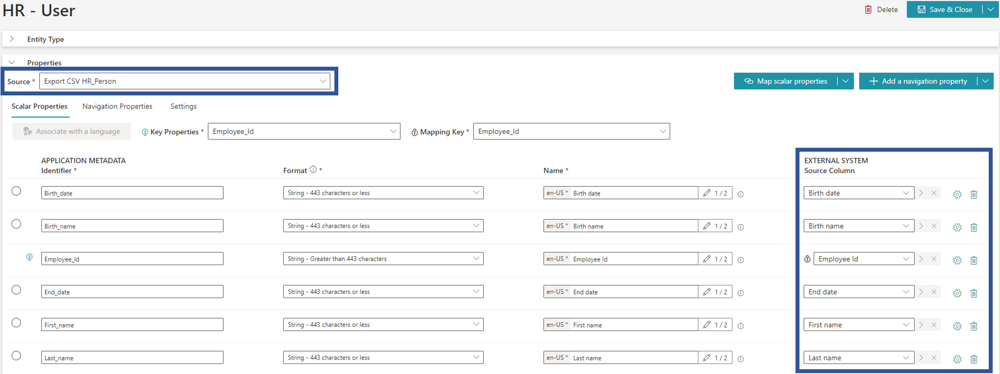
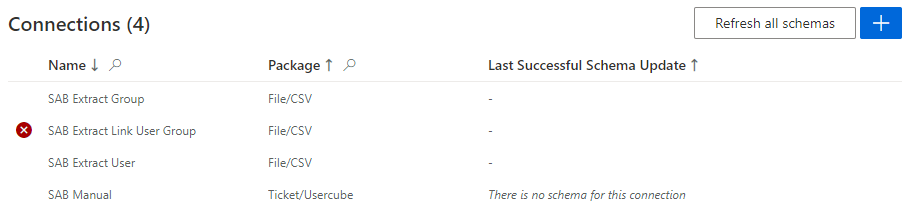
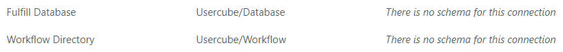

Connections
This page gathers useful information concerning the possible uses of connections, used by connectors in order to extract and/or fulfill data from/to external systems.
Connection Configuration
A connector needs at least one Connection which needs to be declared both in the XML configuration and in the appsettings.agent file to be used. The connection settings must be set in appsettings.agent.json > Connections > connectionIdentifier, where connectionIdentifier is the identifier specified for the connection in the XML configuration.
See the Connection topic for additional information.
The information stored in the connection depends on the export and/or fulfill technologies used by the connection's package.
See the References: Connectors topic for additional information.
Connection Tables
A Connection Table represents the potential output of the connection's Export Task , when the connection's package allows export. The export process generates CSV files (our connection tables) whose names start with the connection's identifier. The files' suffixes depend on the connector. See the References: Connectors topic for additional information.
The name of these files are used to specify the connection tables of the Entity Type Mapping and Entity Association Mapping in order to link the connectors' properties to the source files and columns from the managed systems.
A connection table is used in the definition of an entity type as Source, while the available columns of the selected table are used for the mapping as Source Columns.

Refresh Schema
A schema is a snapshot of the data structure (metadata) retrieved by a connection. It needs to be refreshed to enable the configuration of entity types and resource types.
Identity Manager refreshes a connection's schema:
-
after the connection creation;
-
when clicking on Refresh Schema on the connection's page: only the schema of the current connection is refreshed;
-
when clicking on Refresh all schemas on the connector's page: all schemas of the connector are refreshed.
In the Connections frame, either the last successful schema update is indicated or an icon is shown if the refresh schema failed.

Some packages don't generate a schema. For these packages, the Refresh Schema button isn't displayed on the connection's page. On the connector's page, a connection without schema is indicated by the sentence "There is no schema for this connection".

The connections' schemas must be refreshed before editing the connector's entity types via the UI, whether the connections were created via the UI or XML configuration. Otherwise, there will be no connection table available in the Source dropdown, so you will not be able to save anything.
Export/Fulfill Tasks and Resource Type Mappings
Connections are given to ExportTasks through the Connection attribute, which is mandatory as the ExportTask needs this information to use the right technology and search the information in the appsettings.agent.json.
It can also be given to FulfillTasks the same way but must not be if the FulfillTask has TaskResourceTypes.
ResourceTypeMappings have the Connection attribute as well, which is mandatory. If a FulfillTask has TaskResourceTypes, it will use the given connections to provision the different ResourceTypes.
Secured Options
A connection's parameters fall into two categories: regular or secured options.
The particularity of secured options is that, once set, they will never again be shown to users. Hence, extra care should be taken while specifying them.
There are several types of secured options: a simple field or multiple key-value fields.
See the Configure Secured Options topic for additional information.